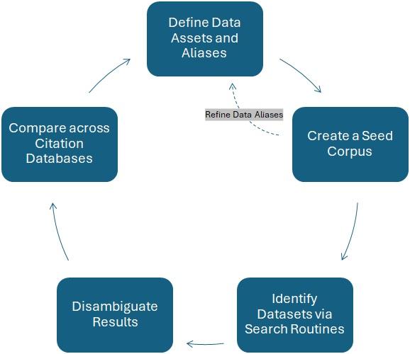

Methodology for Comparing Citation Database Coverage of Dataset Usage
Technical Report
1 Executive Summary
Federal agencies like the US Department of Agriculture (USDA) track how their datasets are referenced in research papers and disseminate data usage statistics through platforms like DemocratizingData.ai and NASS’s 5’s Data Usage Dashboard. This report presents a methodology for comparing citation databases as potential data sources for identifying dataset mentions within research papers, using Scopus, OpenAlex, and Dimensions as test cases. The methods described can be applied to evaluate other citation databases such as Web of Science, Crossref, and Microsoft Academic, to name a few.
Citation databases track academic research output. Different databases curate content (i.e., research output) in different ways - some focus on peer-reviewed journals while others include preprints and technical reports. Tracking dataset usage requires developing methods that scan publication text for dataset mentions. The accuracy of dataset tracking depends on the scope of research output we can access and analyze. Not to mention, dataset tracking requires reliable citation data from citation databases.
The three citation databases we are comparing are Elsevier’s Scopus, OurResearch’s OpenAlex, and Digital Science’s Dimensions.ai. Scopus (Section 3.2) charges for access to its citation database. It focuses on peer-reviewed literature and provides metadata about authors, institutions, and citations for academic journals. OpenAlex (Section 3.3), an open-source platform, offers free metadata access. It covers both traditional academic publications and other research outputs like preprints and technical reports. Dimensions (Section 3.4), developed by Digital Science, offers a hybrid model that provides both free and subscription-based access to its citation database. Unlike Scopus, which primarily indexes peer-reviewed journal articles, and OpenAlex, which emphasizes open-access content, Dimensions aggregates a broad spectrum of research outputs, including journal articles, books, clinical trials, patents, datasets, and policy documents. It integrates citation data with funding information, making it a useful tool for assessing the impact of research beyond traditional academic publishing.
Our methodology provides a systematic approach for assessing citation databases’ strengths and limitations in tracking dataset usage across research papers. We developed procedures for:
- Identifying publication coverage across citation databases
- Deduplicating author records
- Standardizing institution names
- Cross-referencing publications between datasets
- Analyzing research themes and institutional representation
Our comparison of citation databases found:
- After deduplication, the number of distinct authors decreased by XX% in Scopus and XX% in OpenAlex, indicating significant duplicate entries in the raw data
- Institutional coverage was broader in XX, with XX% more institutions represented compared to XX
- Analysis revealed XX major themes in USDA dataset usage, with ?? and ?? being the most prominent
- Minority-Serving Institutions (MSIs) represented only XX% of institutional users, highlighting opportunities for broader engagement
The methodology produced these reusable components:
- Code repository for data cleaning and standardization
- Cleaned author tables with disambiguated names and institutional affiliations
- Standardized institution tables using IPEDS identifiers
- Crosswalk table structure linking Scopus and OpenAlex publication records, authors, and institutions
- Data schema documentation [Last updated: January 3, 2025]
2 Terminology
Citation databases form the foundation of modern research tracking and analysis. Digital repositories, like the test cases featured in this report, systematically catalog scholarly publications and their references to each other (De Bellis, 2009). Citation databases differ in their approaches to curating and maintaining this information. Some focus exclusively on peer-reviewed journal articles with strict inclusion criteria, while others index a broader range of research outputs including preprints, technical reports, and conference proceedings (Martín-Martín et al., 2021; Mongeon & Paul-Hus, 2016). These curation approaches affect how comprehensively each database captures research impact (Visser et al., 2021).
Understanding how these databases work requires familiarity with bibliometrics - the statistical analysis of published works and their impact (Broadus, 1987). Bibliometric analysis examines patterns in publication, citation networks, and research influence (Hood & Wilson, 2001). The field emerged from early citation indices, which mapped relationships between papers through their references (Garfield, 1955).
For tracking USDA dataset usage, these concepts directly apply. Accurate tracking of dataset usage in scientific literature serves multiple purposes. For federal agencies like the USDA, it helps monitor the return on public data investments, find gaps in dataset use, plan future data collection, and support evidence-based policy decisions. This tracking requires reliable citation data from citation databases. Unlike standard citations, researchers often reference datasets within the text of their publications rather than citing them formally. This makes tracking dataset usage more complex.
To solve this tracking challenge, methods have been developed that scan publication text for dataset mentions (Lane et al., 2022). The scope and accuracy of our dataset tracking depends on what publications we can access and analyze. Because different databases curate content in different ways, it creates variation in what dataset mentions they capture and their frequency. Variations in content across sources affect our ability to accurately track dataset impact and adoption. The DemocratizingData.ai platform, for example, uses bibliometric data to monitor these dataset usage patterns, helping USDA understand how its data supports research. By comparing how different citation databases track this information, we can better understand their strengths and limitations for monitoring research impact.
3 Project Background
The DemocratizingData.ai platform currently uses Scopus, a fee-based service, to track USDA dataset usage. OpenAlex, an open-source alternative, offers potential cost savings and broader access. Moving to OpenAlex would reduce operational costs while maintaining public access to USDA’s dataset usage metrics. However, the decision to transition from Scopus to OpenAlex requires systematic evaluation of their coverage and data quality.
Initial comparisons between Scopus and OpenAlex revealed unexpected patterns in coverage overlap. These findings suggested that simply replacing one database with another might affect the platform’s ability to track dataset usage accurately.
3.1 Project Objective
The objective of this project is to determine the coverage of publications across citation databases. This information will be used to decide the viability of replacing Scopus with a less costly solution.
3.1.1 Specific Aims
- Evaluate differences in publication coverage across citation databases – Compare how well Scopus, OpenAlex, and Dimensions track dataset usage in research publications and assess variations in publication inclusion.
- Assess journal coverage – Determine which journals each platform indexes and analyze how these differences impact dataset visibility.
- Analyze publication-level discrepancies – Compare how each platform captures research publications within indexed journals and identify potential gaps in dataset tracking.
- Examine author and institutional representation – Investigate how each platform attributes authorship and institutional affiliations, with a focus on variations by research institution type (e.g., Minority-Serving Institutions).
- Develop a reproducible methodology for database comparison – Establish a systematic approach for evaluating other citation databases beyond Scopus, OpenAlex, and Dimensions.
These aims guided the development of a methodology for comparing citation databases, focusing on four areas:
- Journal coverage: Determining which journals each platform indexes
- Publication tracking: Comparing how each platform captures publications within indexed journals
- Author identification: Evaluating how each platform handles author names and affiliations
- Institution recognition: Determining how each platform records and standardizes institutional information
Research partners at the University of Utah have access to Dimensions. The scope of work expanded to include Dimensions alongside Scopus and OpenAlex. This inclusion provides a more comprehensive assessment of citation databases, particularly in evaluating dataset coverage across both proprietary and open-access platforms.
Our methodology provides a systematic approach for assessing citation databases’ strengths and limitations in tracking dataset usage across research papers. Beyond platform comparison, this methodology examines differences in research coverage, particularly the presence of MSIs. This component helps identify variations in dataset coverage and usage across different types of research institutions.
The methods described in this report can be applied to other citation databases as alternatives to current data sources.
3.2 Scopus
3.3 OpenAlex
3.4 Dimensions
4 Project Workflow
The project workflow outlines the steps involved to evaluate how different citation databases track USDA dataset mentions in research papers. In searching for dataset mentions, the goal is to identify a set of publications that can be compared across the citation database test cases.

The process of deriving the list of publications from a citation database consists of five steps:
1. Define Data Assets and Aliases (Section 4.1)
- Identify USDA datasets that will be searched for and tracked.
- Collect official dataset names along with common abbreviations, acronyms, and alternative references used.
Result: A structured list of dataset names and aliases to be used for search strategies.
2. Create a Seed Corpus (Section 4.2)
- Collect an initial set of publications.
- Analyze how datasets are referenced.
- Determine how well the dataset name variations (from Step 1) are retreived from the publications.
- Adjust searches to improve accuracy.
Result: A set of seed publications to inform dataset identification and search procedures.
3. Create a Publication Dataset for Dataset Mentions (Section 4.3)
- Extract dataset mentions using various search strategies:
- Full-Text (String) Search: Scan entire articles for relevant dataset names.
- Reference Search: Identify dataset citations within publication references.
- Machine Learning Models: Apply Kaggle competition models trained to detect dataset mentions.
Result: Different search routines yield different sets of publication results.
4. Disambiguate Publication Results (Section 4.4)
- Pre-process and clean publication metadata generated from each citation database.
- Standardize journal, institution, and author names.
- Deduplicate records.
Result: Cleaned publication metadata, removed of duplicates, inconsistencies, and missing information.
5. Compare across Citation Databases (Section 4.5)
- Compare dataset coverage across Scopus, OpenAlex, and Dimensions.
- Apply fuzzy matching techniques to identify overlapping and unique dataset mentions.
- Analyze differences in journal coverage, citation patterns, and author affiliations.
Result: A set of statistics that can be used to evaluate dataset tracking accuracy.
4.1 Step 1: Define Data Assets and Aliases
The data assets featured here consist of those collected by the USDA, primarily from the Economic Research Service (ERS) and the National Agricultural Statistics Service (NASS). These data assets are widely used in agricultural economics and food systems research. The goal of this step is to compile a structured list of dataset names and their commonly used variations.
4.1.1 National Agricultural Statistics Service (NASS) Data Assets
In late July 2023, an initial set of 21 reports were received containing a report name and a URL link to database curated by Cornell University. These reports are part of the USDA’s efforts to track data usage across various research applications. However, the names of these reports were highly generic, making it difficult to precisely identify them in citation databases. Examples include reports titled “Agricultural Prices” and “Farm Labor,” which lack specificity when compared to more structured dataset identifiers.
Data Processing and Standardization
To improve identification and searchability, the input was analyzed and transformed into a structured list that included:
- International Standard Serial Numbers (ISSNs): Each of the 21 reports was assigned an ISSN, where available, to provide a standardized identifier.
- Alias Creation: Generic report names were appended with the term report to better distinguish them from other similarly named publications in research literature.
- Expanded Search Terms: Additional variations of dataset names were included to account for different citation styles and possible ways authors reference these reports.
The final dataset classification involved:
- Main Data Asset (Parent Record): The original 21 reports, each representing a distinct dataset.
- Aliases: ISSNs and URLs served as aliases to improve retrieval accuracy.
- Search Term Expansion: Combining report names with different citation formats led to a total of 64 search terms (21 parent records + 43 aliases).
This standardization process improved the efficiency of identifying NASS datasets across publications indexed by citation databases such as Scopus, OpenAlex, and Dimensions.
4.1.2 Economic Research Service (ERS) Data Assets
The process of identifying ERS data assets occurred in two phases: (1) an initial dataset compilation, and (2) a refinement process incorporating feedback from a team of agricultural economists at Colorado State University (CSU). This process was meant to yield a list of data assets was both comprehensive and relevant to the research community tracking USDA dataset usage.
Phase 1: Initial Compilation of ERS Data Assets
In October 2023, an initial list of 2,103 ERS records was compiled. These records included dataset names and, in some cases, associated aliases. The list was then reviewed by Professor Julia Lane, who identified and removed 144 records that were not suitable for machine learning-based dataset tracking.
Reasons for Exclusion
- Records were too generic – Terms such as “Milk, Cotton, and CSV Format of National Data” were too broad to be meaningfully identified in citation databases.
- Records were too specific – Entries such as “Table 15—Agricultural Chemical Input” and “Southeast: 1982-91, 1992-97” were references within broader reports rather than standalone data assets.
After these exclusions, the remaining 1,959 records represented the initial list of ERS data assets.
Phase 2: Refinement with CSU Team
A team of agricultural economists at CSU were consulted to refine the list so that it accurately captured key USDA datasets that may have been overlooked in the initial process. This involved:
- Reviewing dataset usage in prior USDA research – Identifying which datasets were frequently cited.
- Cross-checking with known data users – Ensuring that key datasets used by agricultural economists were included.
- Expanding alias definitions – Recognizing dataset acronyms and alternative naming conventions.
As part of this process, an additional set of assets was incorporated, including datasets that had been previously identified in the Year 1 USDA project. Notably, datasets such as the Census of Agriculture and the Agricultural Resource Management Survey (ARMS) were added, along with key acronyms like FoodAPS. This phase contributed:
- 12 new parent records
- 8 additional alias records
- Total: 20 new search terms
Final Data Asset Identification
Unlike NASS data assets, which had ISSNs and DOIs, ERS datasets were primarily linked through URLs. The final structured dataset included:
- 1,959 parent records (main ERS datasets)
- 1,959 alias records (URLs serving as dataset identifiers)
- 20 additional records from the CSU consultation
- Total: 3,918 search terms
Through this two-phase process, the list of ERS data assets evolved from an initial broad set of records into a refined, structured collection of datasets that could be effectively tracked across citation databases.
4.1.3 Final List of USDA Data Assets
The data assets represent those most frequently used in agricultural economics research, spanning topics from farm management to food security. The final set of data assets, their producing agencies, and descriptions are presented in Table 1.
| Dataset Name | Produced By | Description |
|---|---|---|
| Census of Agriculture | NASS | Conducted every five years, it provides comprehensive data on U.S. farms, ranches, and producers. |
| Agricultural Resource Management Survey (ARMS) | ERS | A USDA survey on farm financials, production practices, and resource use. |
| Food Acquisition and Purchase Survey (FoodAPS) | ERS | A nationally representative survey tracking U.S. household food purchases and acquisitions. |
| Current Population Survey Food Security Supplement (CPS-FSS) | ERS | An annual supplement to the Current Population Survey (CPS) measuring U.S. household food security. |
| Food Access Research Atlas (FARA) | ERS | A USDA tool mapping food access based on store locations and socioeconomic data. |
| Rural-Urban Continuum Code (RUCC) | ERS | A classification system distinguishing U.S. counties by rural and urban characteristics. |
| Household Food Security Survey Module | ERS | A USDA survey module used to assess food insecurity levels in households. |
| Local Food Marketing Practices Survey | NASS | A USDA survey on U.S. farms’ local food sales, direct-to-consumer marketing, and supply chains. |
| Farm to School Census | FNS | A USDA survey tracking school food procurement and local farm partnerships. |
| Quarterly Food at Home Price Database (QFAHPD) | ERS | A database of U.S. retail food prices by product, region, and time. |
| Tenure Ownership and Transition of Agricultural Land (TOTAL) | NASS | A survey collecting data on farmland ownership, leasing, and transfer. |
| Transition of Agricultural Land Survey | NASS | A component of TOTAL that examines farmland ownership changes and succession plans. |
| Information Resources, Inc. (IRI) InfoScan | Circana (formerly IRI) | A commercial scanner dataset tracking retail food and consumer goods purchases. |
Appendix: Data Asset - Alias Dyads
To provide a comprehensive reference for dataset tracking, the following appendix includes a detailed list of data assets and their corresponding aliases, collectively referred to as dyads. Each dyad represents a dataset-name and alias pair used in citation database searches, allowing for more precise identification of dataset mentions in research publications. These aliases include acronyms, alternate spellings, dataset variations, and associated URLs, ensuring broad coverage across different citation practices. The dyad list serves as the foundation for dataset extraction and disambiguation across Scopus, OpenAlex, and Dimensions. A complete reference of these dataset aliases is included in Appendix XX.
4.2 Step 2: Create a Seed Corpus
After defining the data assets and aliases in Step 1 (Section 4.1), the next step is to identify where these datasets are referenced in research publications. The goal of this step is to establish a targeted search space by identifying publications most likely to reference the defined datasets.
This seed corpus approach was only applied to Scopus; for OpenAlex and Dimensions, this procedure was not conducted, and dataset identification was instead performed through string searches across their entire publication records, described in Section 4.3.
For Scopus, a seed corpus was created to establish a targeted search space, balancing recall (capturing relevant mentions) and precision (minimizing false positives). This process included a restricted search strategy, using both reference lists and full-text searches, as well as machine learning-assisted review and manual refinements to resolve ambiguities, consolidate duplicate aliases, and incorporate missing terms. The refined seed corpus then informed the data identification step.
Rationale
There are several factors that motivate the use of a restricted search space. Although an increasing number of research publications cite datasets in a standard way, data citation has not been adopted as a uniform practice in the research community. Consequently, searches of publication metadata (e.g., the publication reference list) alone is not sufficient. A full text search is required to find all citations of the relevant data assets. However, full text searching is much more intensive in terms of computation, and more expensive in terms of the validation process. As a consequence, the search space is restricted to balance recall and precision.
Increasing recall means more of the data assets will be found and hence will provide a broader picture of the data asset’s impact. However, increasing recall comes at the expense of precision, i.e., it will result in more false positives. No matter how attractive achieving high levels of recall may be, that objective rapidly becomes prohibitive in terms of both cost (subject matter expert effort) and time.
These three inputs were then combined to provide one list of data assets that could be used in the subsequent process steps. The combined list comprised 2,006 parent records and a further 1,996 aliases (some of which were acronyms). There was therefore a total of 4,002 search terms.
Creating a Seed Corpus
The process of creating the search corpus, that is, the body of texts that will be searched, begins with the creation of a seed corpus. The purpose of the seed corpus is to define the parameters that can be used for creating the final search corpus. The seed corpus is, to a first approximation, created by text matching the name for each parent data asset and its aliases with:
- full-text records in ScienceDirect which are within a specified range of publication years, and
- the reference section for Scopus records that are within the specified range of publication years. For the USDA Year 2 project, the date range period was publications produced between 2017 and 2023 (inclusive).
Because some of the alias terms are very generic and/or otherwise could result in false positives, they are either excluded from the seed corpus process or only included where they are associated with a flag. In this respect,
- 12 aliases from the total of 4,002 were excluded completely from both the seed corpus creation reference search and the ScienceDirect search.
- 71 aliases were included in the search with a flag term i.e. they returned results only when associated with one or more flag terms. The flag terms were: NASS, USDA, US Department of Agriculture, United States Department of Agriculture, National Agricultural Statistics Service
The search through ScienceDirect and Scopus references resulted in a set of research publication records matched to the data asset names and aliases. Of the 3,990 (4,002 – 12) aliases included in the search, 328 were found in the references and 163 in ScienceDirect. Of course, there are overlaps between these two datasets and the number of unique data assets found within the seed corpus was 334.
The metadata associated with these publications provides insight into what types of research are leveraging these data assets. The “entities” used for this purpose were as follows:
- SciVal Topic – 2,699 unique topics in the seed corpus
- Journal – 2,650 unique journals in the seed corpus
- Top Authors – Authors are grouped by numbers of output in seed corpus and the top 1,000 are selected. In our sample 769 relevant authors were from USA.
It should be noted that Scopus Topics are intended to identify the subject area most likely to use these data assets. These topics are intended to uncover clusters of researchers likely to use similar resources, such as datasets, based on the citation links between their work. It should also be noted that in the Year 1 USDA project, the seed corpus was created just be reviewing list of target journals.
As well as recording the entities, the number of records associated with them that was found in the seed corpus is also collected. This provides the basis by which a filtering can be undertaken to focus down on those entities that should be used in search corpus creation.
The results of the seed corpus generation (i.e. the entities and record counts) were provided for review to Professor Julia Lane on 15 November 2023. Based on that review, the following table provides a summary of
- decisions were taken with regards to the parameters to be used for creation of the search corpus, and
- the implications of that decision on search corpus
| Parameter | Seed Corpus Detection | Consequence / Implication for Seed Corpus |
|---|---|---|
| SciVal Topics | Include those SciVal Topics where the article count in the Seed Corpus | All articles associated with 262 SciVal Topics |
| Journals | Include those Journals where the article count in the Seed Corpus was 7 or more | All articles associated with 280 journals |
| Top Authors | Include those with US affiliation | All articles associated with the US-affiliated 769 Top Authors |
Refinement of Seed Corpus
Following the Machine Learning routines and during the review of the results, some ambiguities were found in the Data Asset list leading to a set of post-search refinements. In a search list of the scale being dealt with (over 4,000) records, finding these ambiguities was not unexpected.
Specifically, in the original list a small number of duplicate alias terms were noted and these were consolidated. A specific example was multiple entries for the data asset “Measuring Access to Food in Tanzania: A Food Basket Approach” and its aliases. Furthermore, it was noted a small number of aliases were attributed to the wrong parent. These were corrected. These changes resulted in a data asset, as at 22 December 2023, that had 3,991 parent and alias records.
Finally, and again only following the original Kaggle search, it was noted that terms relating to Rural Urban Continuum Codes and Quick Stats had not featured in the original list. An additional eight terms were therefore added as an incremental addition to the list on 29 December 2023. These eight terms comprised two parent records with a further six associated aliases. A specific additional search was conducted for these eight records as explained later.
The seed corpus approach was only applied to Scopus.
The seed corpus approach was only applied to Scopus.
4.3 Step 3: Create a Publication Dataset for Dataset Mentions
The goal of this step is to build a dataset of publications that reference the dataset name aliases for the USDA data assets (Table 1) across Scopus, OpenAlex, and Dimensions. This dataset serves as the foundation for comparing publication coverage across citation databases.
To generate this dataset, the process requires:
- Dataset name aliases (from Step 1)
- Search routines tailored to each citation database to extract relevant publications
Search routines, described below, guide this step, as dataset mentions are often inconsistent across publications—appearing in titles, abstracts, full text, or reference lists. Scopus uses a structured seed corpus to refine searches, while OpenAlex and Dimensions rely on direct queries across their full publication records. The outputs of this step are three publication-level datasets, one for each citation database, which will be further analyzed in subsequent steps.
Search Routines
The search routines for Scopus were designed to systematically identify mentions of USDA data assets across a vast collection of academic publications. Multiple approaches were used to maximize dataset identification. These included (1) full-text searches, which leveraged Scopus’s licensed access to retrieve dataset mentions directly from publication text, (2) reference searches, which scanned citation lists for dataset appearances, and (3) machine learning models, which applied text-matching algorithms to improve accuracy.
The process of running the search routines is to identify a candidate match with the list of data assets. The candidate match is effectively the “publication ID – dataset ID” combination and is referred to as a dyad. For any given publication, there may be multiple dyads.
Identifying references to datasets within scientific publications is inherently difficult for a number of reasons including:
- No defined format for dataset references: Datasets are often not cited formally and rather are referred to using unpredictable textual context and formats.
- Name disambiguation: Datasets can be referred to by their full name, acronym, and many other valid ways. For instance, the dataset “Rural-Urban Continuum Codes” may also be referred to as “Rural Urban Continuum Codes” or “RUCC” or by using a URL reference,
- Conflicts with other terms and phrases: Contextual cues need to be used to ensure, for example, that a data asset such as “Feed Outlook” is indeed the relevant USDA reference.
- Simple spelling and other invalid references: Ideally, search algorithms need to allow for “fuzzy” matching to catch slightly misspelled or mis-named datasets.
To address this challenge, the project employed the top three models from the 2021 Kaggle competition sponsored by the Coleridge Initiative.
1. Full Text Search Corpus
Scopus is a large, curated abstract and citation database of scientific literature including scientific journals, books, and conference proceedings. Around 11,000 new records are added each day from over 7,000 publishers worldwide. Elsevier is also licensed to access the full text of publications from many, although not all, of these publishers for internal analysis (the full text is not licensed for public use). Where the appropriate licenses do not exist, the records are excluded from the search. To provide some context in this respect, for calendar year 2022, Elsevier estimates that full text records exist for 91% of records published and captured in that year. With license restrictions also considered, the estimate is that it is possible to undertake full text searches on approximately 82% of the total records for that year.
The USDA full text search corpus was created using Scopus, with a publication year range of 2017 to 2023 inclusive and using the Topics, Journals and Top Authors.
The full text records associated with the USDA search corpus is shown in Table 3:
| Number of Records | |
|---|---|
| 2017-2023 Articles from Topics | 726,423 |
| 2017-2023 Articles from Journals | 1,537,851 |
| 2017-2023 Articles from Top Authors | 21,938 |
| De-duplicated Articles from Above | 2,089,728 |
| Deduplicated articles where we have full text | 1,630,958 |
| Deduplicated articles where we have full text and are licensed to search | 1,450,086 |
2. References Search Corpus
A search through the references list of Scopus records is also undertaken as a separate and distinct step from the full text search. The search corpus here is broader than for full text, as there are no license conditions restricting the search. In addition, because references contain highly structured data, it is feasible to search through all of Scopus, as the computational limitations of full-text search do not apply.
Because of this, all Scopus records within the publication date range are searched. For the USDA search period of 2017 to 2023, this amounted to 25,110,182 records.
The reference search employs an exact text string matching routine across the references of the identified Scopus records.
Because of the issues associated with generic terms, the same flags as applied in the Machine Learning step were also applied here.
| Process Step Outputs | Number of Records |
|---|---|
| Number of unique Scopus publications identified in reference search | 25,588 |
| Number of those publications that were unique to the reference search (i.e. not found by Kaggle models). | 22,818 |
| Number of target data assets matched with the above publications | 34,526 |
3. Machine Learning (Kaggle) Routines (Full Text Search)
The top three models from the 2021 Kaggle competition sponsored by the Coleridge Initiative differ in their approaches, strengths, and weaknesses, and the strategy was to use all three to generate results, aggregating and filtering the results to achieve a synergy that would outperform any of the models individually. The same Kaggle models that were used in support of the Year 1 USDA project were employed on the data assets available to this project.
The models are applied to the full text search corpus and generate a series of outputs identifying potential dataset matches. For two of the Kaggle models, the focus is on identifying general data assets so many matches will be generated that are not relevant to USDA and its target data assets. Thus, a further fuzzy text matching routine is applied to the Kaggle output to produce a subset of candidate matches (dyads) that are linked to the target data assets.
As well as producing metadata for the publications and associated dyads, the process records the Kaggle record that produced the dyad and the scores associated with the matching routines. In addition, for all returned records where publisher licensing allows, a snippet is produced. The snippet is a fragment of text that shows both the referenced dataset and the contextual text that surrounds it, to provide human validators sufficient context to enable them to determine the validity of that candidate reference. The machine learning phase of the project therefore aims to locate all mentions of the target data assets within the search corpus of full text publications and to provide the candidate matches along with their snippets of text to a database that can facilitate subsequent validation by subject matter experts.
With a focus on data assets rather than datasets and with some of the name aliases comprising short acronyms and/or very generic terms, there is a risk that high levels of false positives would be generated. For example, one of the search terms was “Crop Progress Report”. There are likely to many other countries beyond the US that all issue reports on Crop Progress. Hence, as well as searching for the terms, a set of flags/filters were also included thus ensuring dyads could be identified which also had the flagged terms. Typically, the filters chosen were linked either to focusing on the agency or to focusing on the research produced in the US. Specifically, for the full text search in the USDA project, the following terms were employed as filters:
NASS, USDA, US Department of Agriculture, United States Department of Agriculture, National Agricultural Statistics Service, Economic Research Service
In total, the use of flags was identified as being appropriate for 112 of the data assets.
The Kaggle routines were run in early December 2023 with the process completing on 14 December.
A summary of some of the key results from the Full Text search is provided in Table 5:
| Process Step Outputs | Number of Records |
|---|---|
| Number of unique Scopus publications identified by the three Kaggle algorithms | 635,831 |
| Number of unique publications identified after Fuzzy text matching to target data assets | 4,104 |
| Number of target data assets matched in the above publications | 4,3921 |
| Number of snippets generated | 14,3772 |
Post Processing Adjustments – RUCC and QuickStat Increment
Note that the RUCC and Quickstat increment was applied after the Kaggle routines were initially run. The process for running that increment involved two steps:
- A new search of the Scopus reference search corpus using the RUCC and Quickstat aliases.
- A fuzzy text search of the Kaggle output that had been generated using the RUCC and Quickstat aliases.
Describe Rafael’s methodology for searching for dataset names in OpenAlex articles and additional steps Cal did to pull data from the OpenAlex API
To collect publications mentioning the NASS Census of Agriculture from the OpenAlex Catalog, I conducted a string search using a predefined set of dataset aliases: “Census of Agriculture,” “USDA Census,” “NASS Census,” “Agricultural Census,” and “AG Census.” To minimize false positives, I applied several filters: the publications had to be in English, published between 2017 and 2024, and include at least one author affiliated with an American institution. Additionally, to ensure that the publications were indeed referring to the correct dataset, I required that they also contain specific flag terms within the full text body, such as “USDA,” “US Department of Agriculture,” “United States Department of Agriculture,” “NASS,” or “National Agricultural Statistics Service.”
This method closely mirrors the approach used in the USDA Briefing Book sent by Julia (Appendix 1: Data Search), where a similar string search was applied to the Scopus catalog. In the Scopus analysis, the string search was performed primarily on the references text body rather than the full text and was executed only within a seed corpus. In contrast, our search in OpenAlex was conducted across the entire OpenAlex database. Notably, the references string search in Scopus identified over 80% of the findings, as documented in the briefing book, highlighting the effectiveness of this approach.
Refer to the Appendix for additional details on file construction.
4.4 Step 4: Disambiguate Publication Results
According to Section 3.1.1, one of the goals of this analysis is to evaluate the differences in publication coverage across citation databases.
To compare publication coverage across citation databases, we must first identify all journals that contain publications using each dataset in Scopus, OpenAlex, and Dimensions. Table 1 displays a list of the datasets for which we evaluate coverage.
The goal of this step is to standardize and resolve inconsistencies in publication records by disambiguating journal names, author affiliations, and institutions across the three databases.
4.4.1 Disambiguation Procedure
We create subsets of the publication dataset generated in Step 3, filtering by dataset mention. For example, if a publication references Ag Census, it is included in the Ag Census sub-dataset; otherwise, it is excluded. This process allows us to analyze dataset-specific publication patterns across Scopus, OpenAlex, and Dimensions.
Our analysis follows a hierarchical approach to understand how USDA data assets appear in these citation databases.
Journal Level – We identify which journals publish research articles using USDA datasets to establish publication patterns. This step inherently involves looking within a journal’s publications to determine dataset mentions at the journal level—meaning that a journal is included if at least one of its publications references the dataset, but this does not indicate the overall prevalence of dataset usage within that journal.
Publication Level – We examine individual publications within these journals to understand the breadth of articles mentioning the dataset and how researchers use and cite USDA datasets in their work.
Author Level – We analyze the authors of these publications, tracking their institutional affiliations and research networks (e.g., coauthors). This provides another way to assess dataset reach, focusing on who is using the data rather than just where it appears.
Institution Level – We map dataset usage across institutions to understand where research using USDA data is concentrated geographically and across different types of research organizations. Like the author-level analysis, this offers an alternative lens on dataset dissemination.
This structured approach ensures that dataset mentions are analyzed consistently across databases, allowing for meaningful comparisons of coverage and research impact.
4.4.2 Case Study: Census of Agriculture
To illustrate the disambiguation process, we use the Census of Agriculture as a case study to systematically compare coverage, overlap, and differences between the three citation databases. The Census of Agriculture (also referred to as “Ag Census”) is widely used in agricultural and economic research, making it an ideal dataset for assessing database differences.
Disambiguation by Citation Database
Journal Coverage
To analyze journal coverage in Scopus, we generate a dataset containing all unique journals that include at least one publication referencing Ag Census data. This dataset is built from an initial publication-level dataset, which captures individual research articles mentioning Ag Census.
We construct the publication-level dataset for only Ag Census mentions using the following metadata from the publication-level data:
- Publication identifier (DOI)
- Journal name
- Publisher
- ISSN (International Standard Serial Number, a unique journal identifier)
- Dataset alias (alternate names used to reference Ag Census)
- Dyad (dataset mention pair)
This data structure follows the format outlined in the data schema (Figure XX).
Scopus assigns multiple identifiers to the same dataset depending on how it is reported, rather than a single, standardized identifier. Therefore, the authors create a crosswalk between Scopus and OpenAlex so that each dataset can have one common identifier.
After assembling the publication-level dataset, the final step in preparing the Scopus journal-level dataset is to aggregate publications at the journal level based on their ISSN.
Institution Disambiguation
IPEDS Ming
MSI Data Ming
Journal Coverage
To analyze journal coverage in OpenAlex, we generate a dataset containing all unique journals that include at least one publication referencing Ag Census data. The OpenAlex journal-level dataset follows a similar approach to Scopus but differs in data availability and structure.
OpenAlex links journals to their respective publications using linkage files, which connect publication records to dataset mentions. Unlike Scopus, OpenAlex assigns a single dataset identifier per dataset, while Scopus may have multiple identifiers for the same dataset depending on how it is referenced.
Additionally, OpenAlex formats journal and publication identifiers differently:
- ISSNs appear without dashes
- DOIs exclude the URL portion, storing only the core identifier
To ensure consistency with Scopus, we clean and standardize the publication-level dataset, aligning DOIs and ISSNs to a common format.
CAL TO DESCRIBE THIS PROCESS
Institution Disambiguation
IPEDS Ming
4.4.2.1 MSI Data *Ming** {.unnumbered}
Journal Coverage
Institution Disambiguation
IPEDS Ming
MSI Data Ming
Results from Disambiguation
This section presents overall statistics for Scopus and OA. Each subsection will have results reported for each dataset
4.4.3 Journal Coverage Cal
4.4.4 Publication Coverage Cal
4.4.6 Institution Coverage Ming
4.4.7 Insitutional Representation Ming
4.4.7.1 Geographic Coverage Ming
4.4.7.2 Institution Types Ming
4.4.8 Thematic Analysis Cal/Lauren
4.4.8.1 Publication Topics Cal/Lauren
4.4.8.2 Patterns over Time Cal/Lauren
4.4.9 Journal Coverage Cal
4.4.10 Publication Coverage Cal
4.4.12 Institution Coverage Ming
4.4.13 Insitutional Representation Ming
4.4.13.1 Geographic Coverage Ming
4.4.13.2 Institution Types Ming
4.4.14 Thematic Analysis Cal/Lauren
4.4.14.1 Publication Topics Cal/Lauren
4.4.14.2 Patterns over Time Cal/Lauren
4.4.15 Journal Coverage Cal
4.4.16 Publication Coverage Cal
4.4.18 Institution Coverage Ming
4.4.19 Insitutional Representation Ming
4.4.19.1 Geographic Coverage Ming
4.4.19.2 Institution Types Ming
4.4.20 Thematic Analysis Cal/Lauren
4.4.20.1 Publication Topics Cal/Lauren
4.4.20.2 Patterns over Time Cal/Lauren
4.5 Step 5: Compare across Citation Databases
Continuing with our case study, we now compare the two databases based on the journals that are unique to either Scopus or OpenAlex. Next, for journals that contain Ag Census data in both citation databases, we summarize the coverage of publications that appear in both Scopus and OpenAlex. Finally, we investigate discrepancies based on factors like missing identifiers, mismatched journal information (ISSNs), and additional publications accessed through OpenAlex’s API.
Journal Coverage
To analyze journal coverage in Scopus, we generate a dataset containing all unique journals that include at least one publication referencing Ag Census data. This dataset is built from an initial publication-level dataset, which captures individual research articles mentioning Ag Census.
We construct the publication-level dataset for only Ag Census mentions using the following metadata from the publication-level data:
- Publication identifier (DOI)
- Journal name
- Publisher
- ISSN (International Standard Serial Number, a unique journal identifier)
- Dataset alias (alternate names used to reference Ag Census)
- Dyad (dataset mention pair)
This data structure follows the format outlined in the data schema (Figure XX).
Scopus assigns multiple identifiers to the same dataset depending on how it is reported, rather than a single, standardized identifier. Therefore, the authors create a crosswalk between Scopus and OpenAlex so that each dataset can have one common identifier.
After assembling the publication-level dataset, the final step in preparing the Scopus journal-level dataset is to aggregate publications at the journal level based on their ISSN.
Institution Disambiguation
IPEDS Ming
MSI Data Ming
Journal Coverage
To analyze journal coverage in OpenAlex, we generate a dataset containing all unique journals that include at least one publication referencing Ag Census data. The OpenAlex journal-level dataset follows a similar approach to Scopus but differs in data availability and structure.
OpenAlex links journals to their respective publications using linkage files, which connect publication records to dataset mentions. Unlike Scopus, OpenAlex assigns a single dataset identifier per dataset, while Scopus may have multiple identifiers for the same dataset depending on how it is referenced.
Additionally, OpenAlex formats journal and publication identifiers differently:
- ISSNs appear without dashes
- DOIs exclude the URL portion, storing only the core identifier
To ensure consistency with Scopus, we clean and standardize the publication-level dataset, aligning DOIs and ISSNs to a common format.
CAL TO DESCRIBE THIS PROCESS
Institution Disambiguation
IPEDS Ming
4.5.0.1 MSI Data *Ming** {.unnumbered}
Journal Coverage
Institution Disambiguation
IPEDS Ming
MSI Data Ming
- Rule-based matching for exact matches
- Probabilistic matching for handling variations
- Machine learning methods for complex cases
| Method | Considerations | Example | Pros | Cons |
|---|---|---|---|---|
| Searching for dataset names within Scopus | ||||
| Searching for dataset names within OpenAlex | “Location” field set to “journal” | |||
| Disambiguation of authors | ||||
| Disambiguation of institutions | ||||
| Standardization of institutions | ||||
| Searching based on the frequency of dataset appearance in journals | ||||
| MORE . . . | ||||
| Filtering on keywords to determine themes |
4.5.1 Results from Database Comparison
This section presents results after matching (which type varies – deterministic vs fuzzy)
4.5.2 Journal Coverage Cal
4.5.3 Publication Coverage Cal
4.5.5 Institution Coverage Ming
4.5.6 Insitutional Representation Ming
4.5.6.1 Geographic Coverage Ming
4.5.6.2 Institution Types Ming
4.5.7 Thematic Analysis Cal/Lauren
4.5.7.1 Publication Topics Cal/Lauren
4.5.7.2 Patterns over Time Cal/Lauren
4.5.8 Journal Coverage Cal
4.5.9 Publication Coverage Cal
4.5.11 Institution Coverage Ming
4.5.12 Insitutional Representation Ming
4.5.12.1 Geographic Coverage Ming
4.5.12.2 Institution Types Ming
4.5.13 Thematic Analysis Cal/Lauren
4.5.13.1 Publication Topics Cal/Lauren
4.5.13.2 Patterns over Time Cal/Lauren
4.5.14 Journal Coverage Cal
4.5.15 Publication Coverage Cal
4.5.17 Institution Coverage Ming
4.5.18 Insitutional Representation Ming
4.5.18.1 Geographic Coverage Ming
4.5.18.2 Institution Types Ming
4.5.19 Thematic Analysis Cal/Lauren
4.5.19.1 Publication Topics Cal/Lauren
4.5.19.2 Patterns over Time Cal/Lauren
5 Recommendations
5.1 Technical Recommendations
5.2 Expanding Dataset Usage
This report analyzes USDA dataset usage patterns across both platforms and recommends specific strategies for expanding dataset use in underrepresented research communities.
Given the small percentage of MSI’s represented in our institutional analysis, it is evident that user engagement is central to increasing usage rates of the datasets, regardless of citation database.
6 Conclusion and Next Steps
7 References
Footnotes
Explanatory Note 1: A publication may contain references to more than one target data assets. It may also contain multiple references to the same target data asset. As an example, a publication may contain the following references to target assets (Data Asset A = 3 references, Data Asset B = 2 references, Data asset C = 4 reference then in this field three target data assets, the value included would be “3”.↩︎
Explanatory Note 2: For the same publication as in Explanatory Note 1, the value here would be 9 provided the license for the publication allowed for snippet generation.↩︎